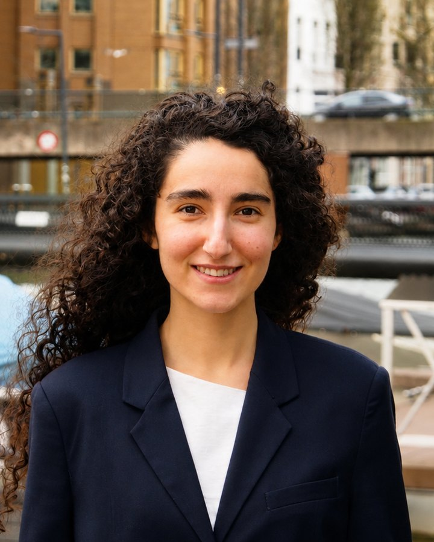

I make laboratory and research data reliable and ready to use.
Data analyst at Danone Specialized Nutrition Research & Innovation, with a background in pharmaceutical quality control and an MSc in Bioinformatics.

What I do at Danone
Scattered data
Integrate
Validate
Reliable data
Experience
-
2026 to now
Data Analyst at Danone Specialized Nutrition R&I
Building data integration and data quality workflows, and helping develop KPI dashboards.
-
2026
Volunteer Data Analyst at Statistics Without Borders
Child Survival and Hospitalization Risk Study for Taimaka, Nigeria: data cleaning, then statistical modelling of mortality during malnutrition treatment.
-
2023 to 2025
MSc Bioinformatics, Distinction at University of Birmingham
Completed alongside work. Statistical modelling, machine learning and health data analytics.
-
2022 to 2026
Senior Microbiology Technician at Johnson & Johnson
Initiated and prototyped an automated QC reporting tool in R Shiny that expanded across global J&J sites.
Projects
-
Statistical machine learning in Python
Clustering, data splitting and a neural network classifier, each with plots and written reasoning.
-
Health data analysis and machine learning
Predictive models on health data, evaluated with cross-validation and ROC analysis.
-
ARNT as a prognostic biomarker in bladder cancer
MSc thesis across two independent patient cohorts: RNA-seq, microarray and copy-number data linked to survival with Kaplan-Meier and Cox models.
-
16S rRNA amplicon analysis
Reproducible workflow from raw sequencing reads to a taxonomy table, documented in Quarto.
Skills
Data integration and quality
Record linkage, time-based joins, deduplication, data validation, reproducible reporting
Statistics and machine learning
Regression, survival analysis, hypothesis testing, clustering, classification, neural networks
Bioinformatics
RNA-seq, differential expression, multi-omics integration, pathway enrichment, metabolomics
Tools
Python (pandas, PySpark, scikit-learn), SQL, R (tidyverse, Shiny), Databricks, Git and GitHub, Quarto, Tableau, Excel